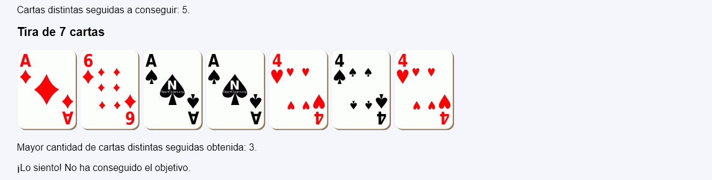

Cartas distintas - Comentarios
- El programa tendrá dos páginas:
- La primera página pide el número de cartas a mostrar (entre 5 y 11) y el objetivo (entre 5 y 7):

- La segunda página comprueba, además de las comprobaciones habituales, si el objetivo es inalcanzable:
- En el caso de que los valores sean correctos, la segunda página muestra los posibles resultados.
- Las cartas tendrán siempre valores del 1 al 6.
- El programa indicará el mayor número de cartas con números distintos seguidas que hay en la tira de cartas.
- El programa indicará si ese número de cartas supera el objetivo elegido en el formulario.


- La primera página pide el número de cartas a mostrar (entre 5 y 11) y el objetivo (entre 5 y 7):